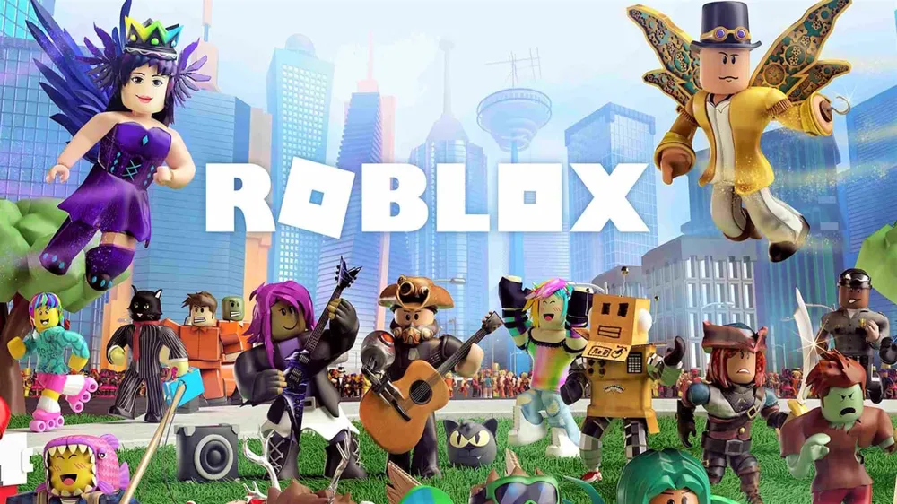
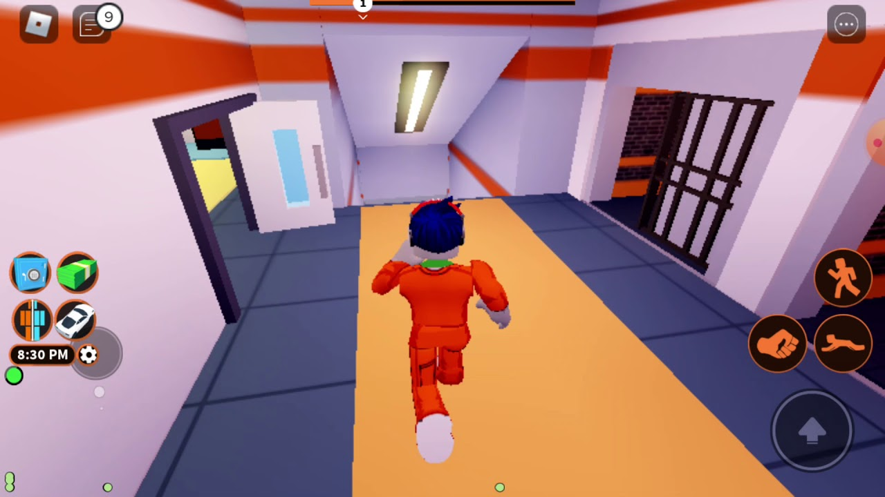
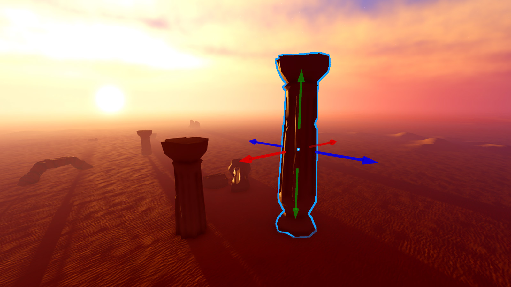

MMO / Sandbox / Metaverso / Piattaforma di gioco


Roblox non si presenta come un videogioco tradizionale, bensì come un enorme incubatore MMO e un metaverso di mondi virtuali che cattura l'attenzione grazie a un catalogo infinito di esperienze. Il gameplay si adatta interamente alla stanza che decidi di selezionare con il tuo avatar: gli obiettivi mutano di continuo, permettendoti di passare in pochi click dal completare percorsi parkour complessi al simulare una vita di città o affrontare RPG ispirati ai trend del momento.
Il rovescio della medaglia è la qualità dei contenuti, che si rivela estremamente altalenante. Navigando nel menu principale è facile imbattersi in stanze create solo per fare clickbait o per spingere i giocatori più piccoli a spendere soldi, offrendo in cambio un gameplay banale e privo di spessore. Spesso ti ritroverai a fare i conti con comandi legnosi e bug fisici dovuti a script scritti male da utenti alle prime armi. La personalizzazione del proprio avatar è immensa, ma purtroppo la stragrande maggioranza degli oggetti richiede i Robux.
Il vero pilastro creativo dell'ecosistema è Roblox Studio, lo strumento di sviluppo esterno completamente gratuito che permette a chiunque di modellare, programmare e pubblicare le proprie idee usando il linguaggio Lua. Attraverso lo Studio, i creator possono gestire la fisica dei blocchi, strutturare regole di gioco complesse e monetizzare il proprio lavoro. Questa caratteristica trasforma la piattaforma in una formidabile palestra digitale per giovani programmatori e game designer.
